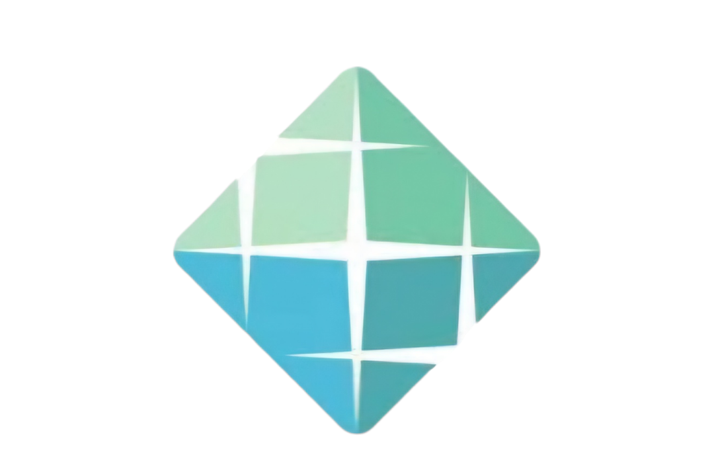
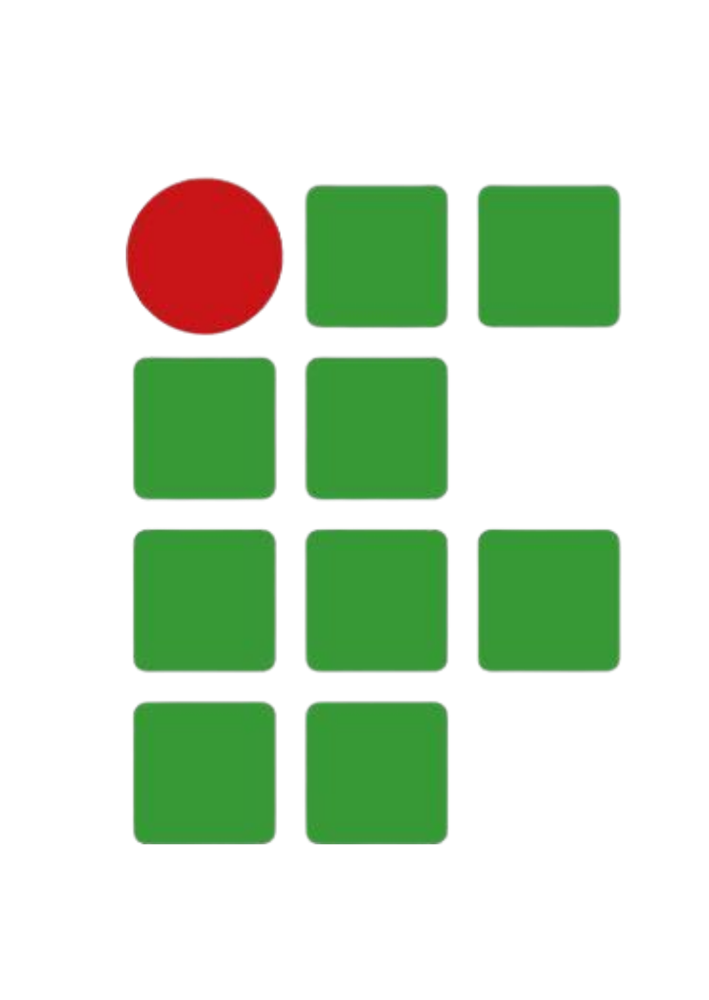
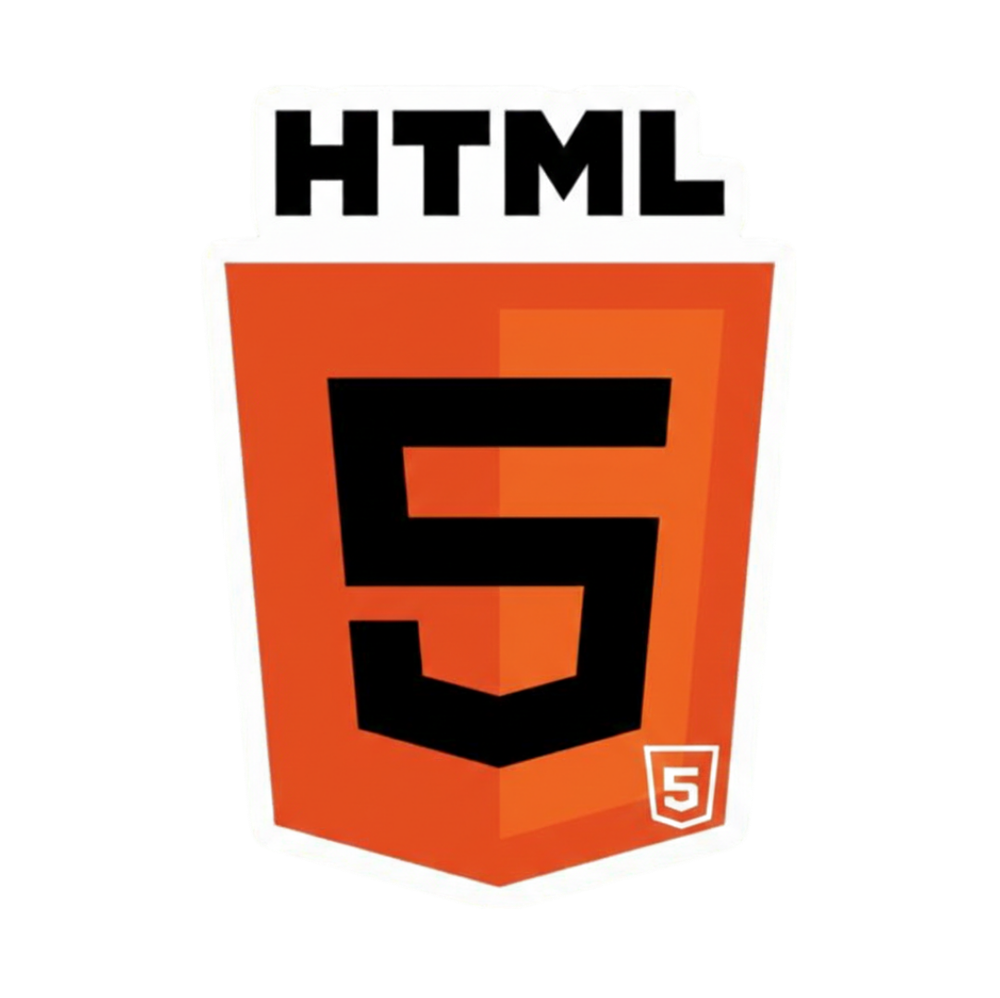
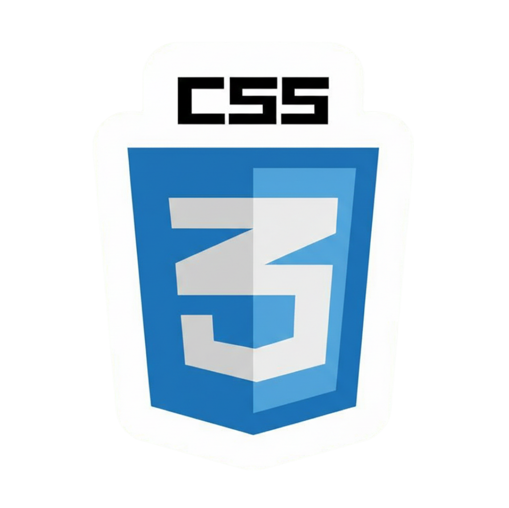
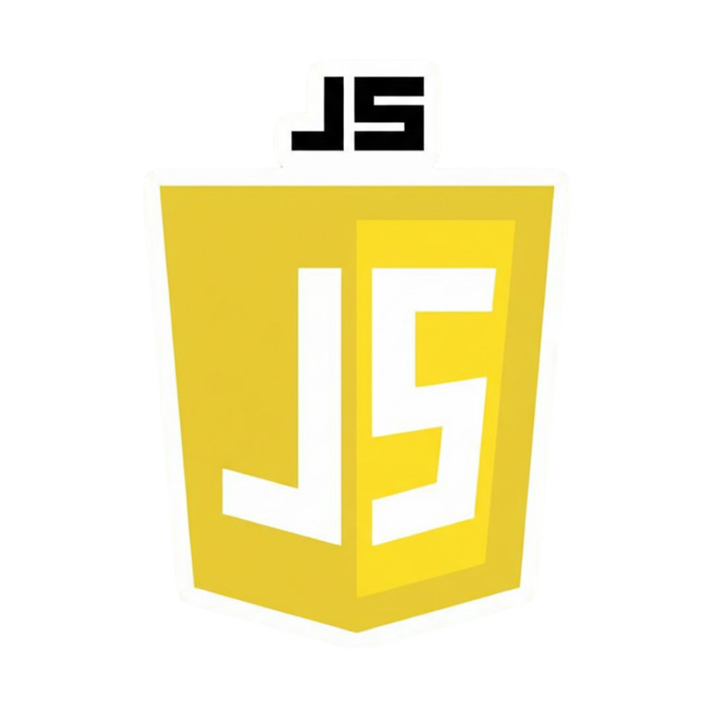
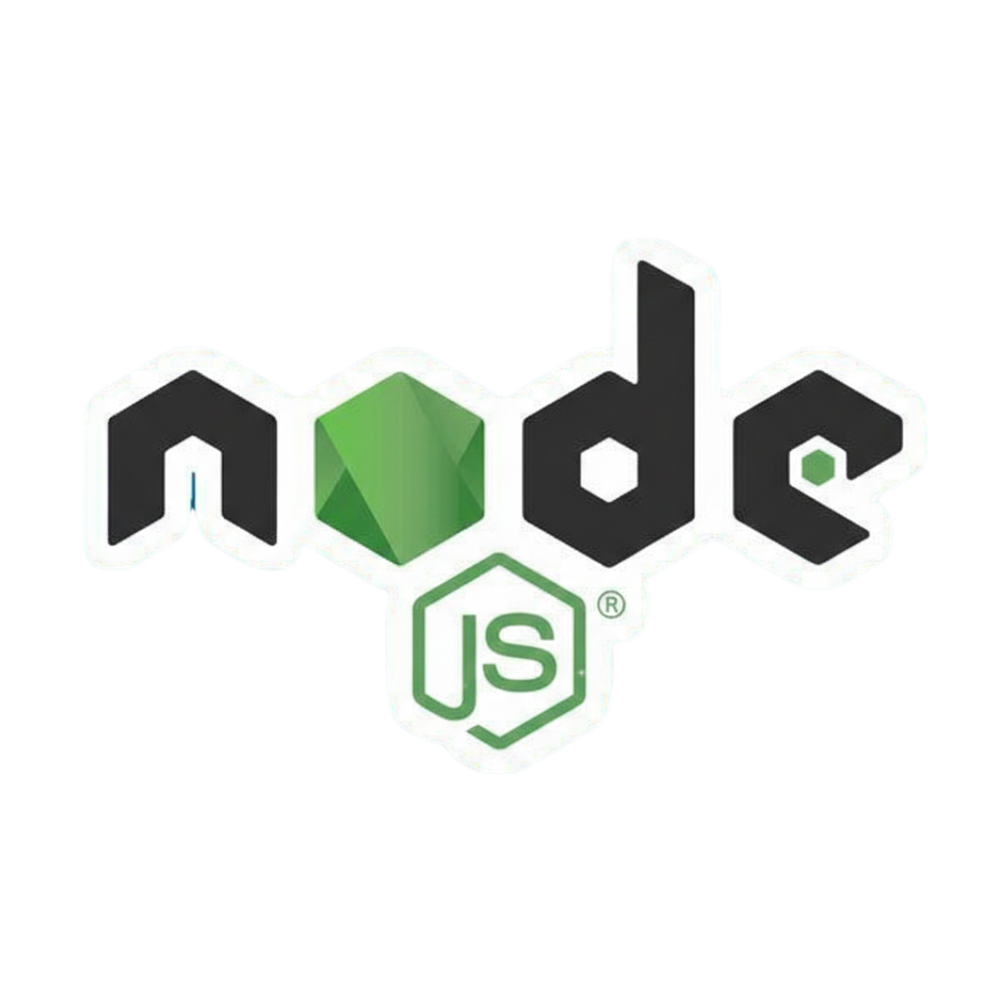
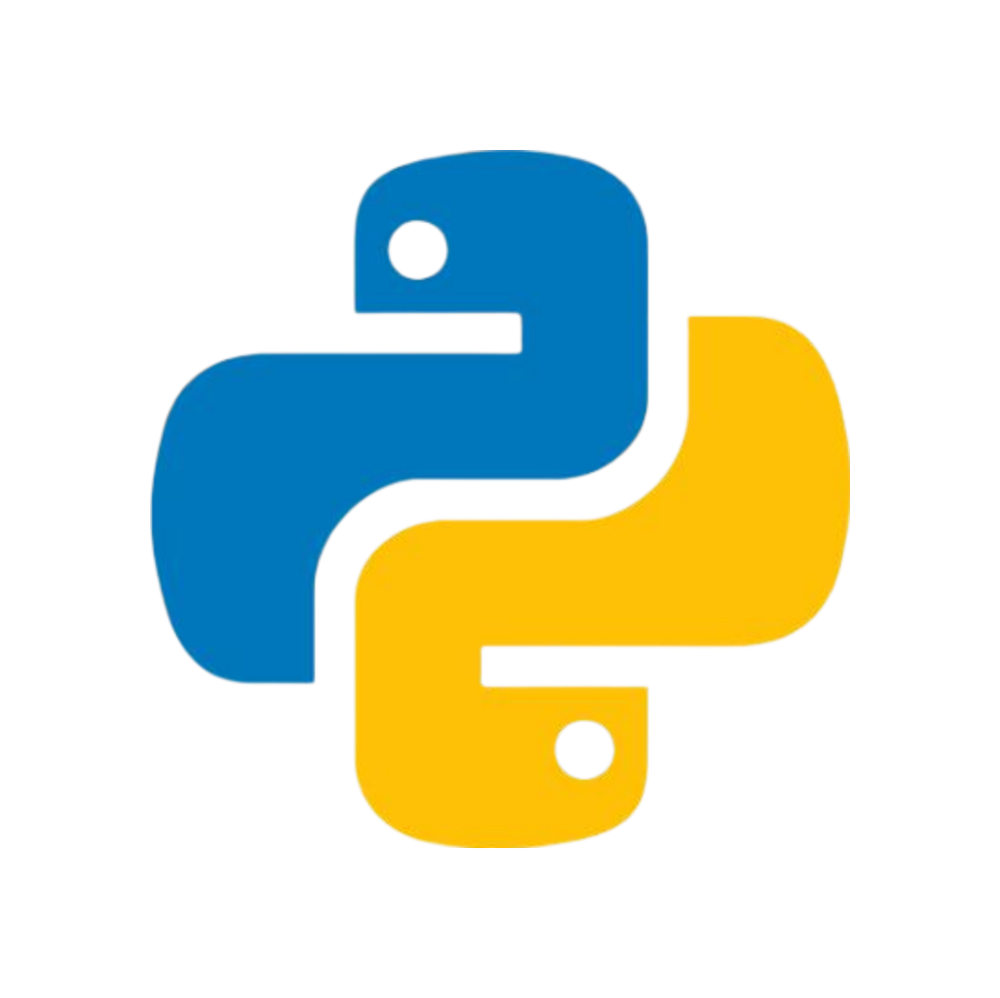
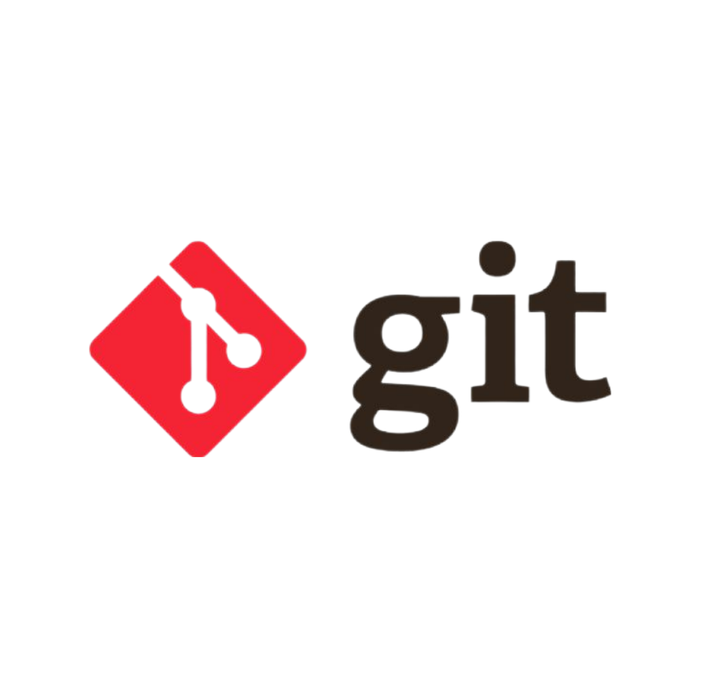

Formações
Ensino Superior

UNIVERSIDADE ESTÁCIO
Análize e Desnvolvimento de Sistemas
Tipo: Tecnólogo
Estado: Cursando
Período: 3° semestre

Ensino Médio

INSTITUTO FEDERAL
Escolaridade: Ensino Médio
Campus: Alta Floresta - MT
Curso Técnico: Administração
Estado: Completo

Tecnologias






Minha História
Nascido e criado na cidade de Alta Floresta, no interior do Mato Grosso, sou um jovem de 20 anos que, desde muito cedo, encontrou na área da computação sua verdadeira vocação. Apesar da pouca vivência no ramo, tenho me empenhado constantemente na busca por conhecimento e evolução profissional, dia após dia.
Atualmente, possuo maior familiaridade com o front-end; entretanto, também me aprofundo no mundo por trás das cortinas, explorando a passos largos o back-end.
Busco oportunidades na área e desejo aprender com aqueles que já trilharam muitos caminhos. Apesar da pouca idade, coloco minha juventude, minha dedicação ao aprendizado e minha sede de vencer a disposição daqueles que me derem uma chance.